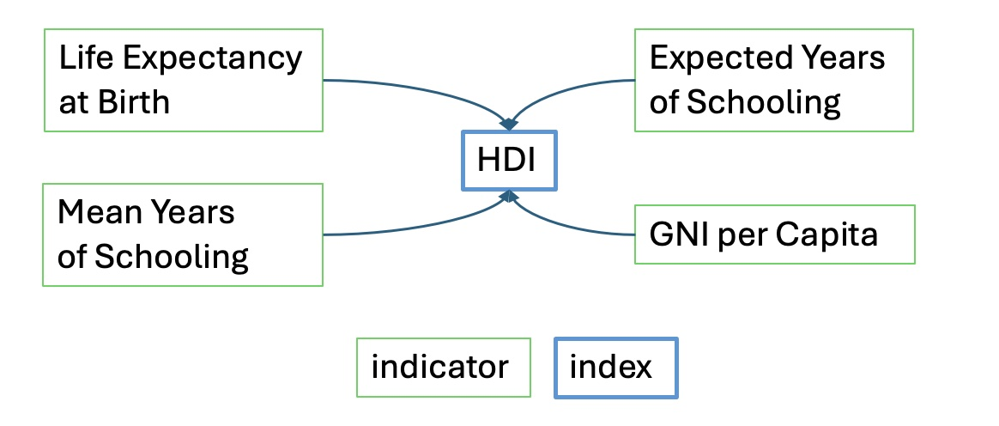
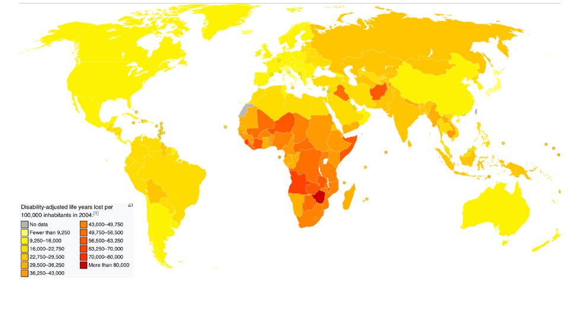
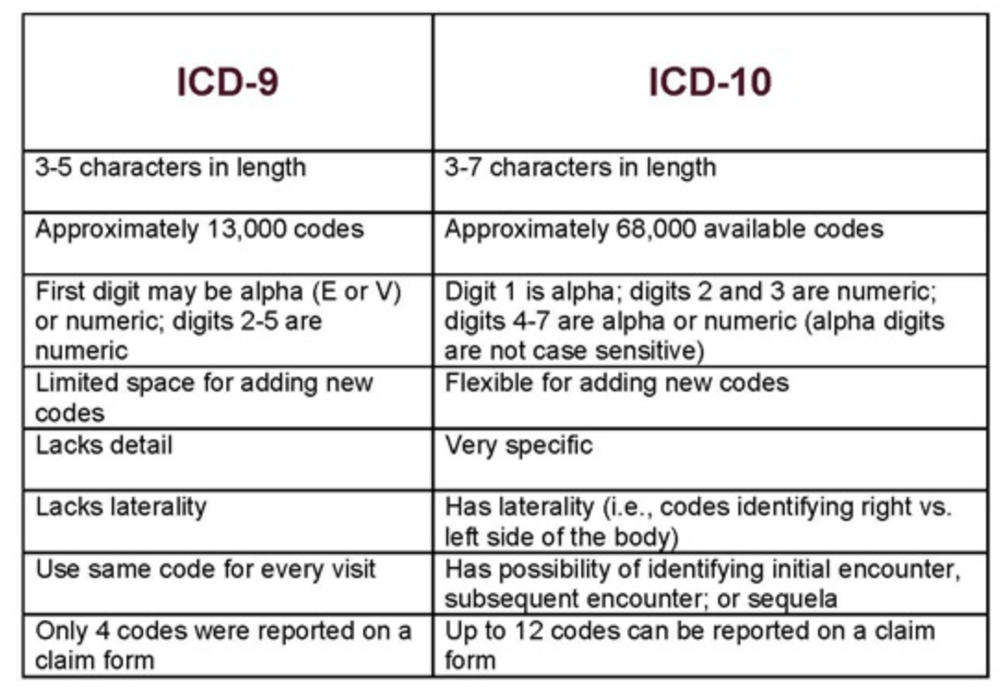
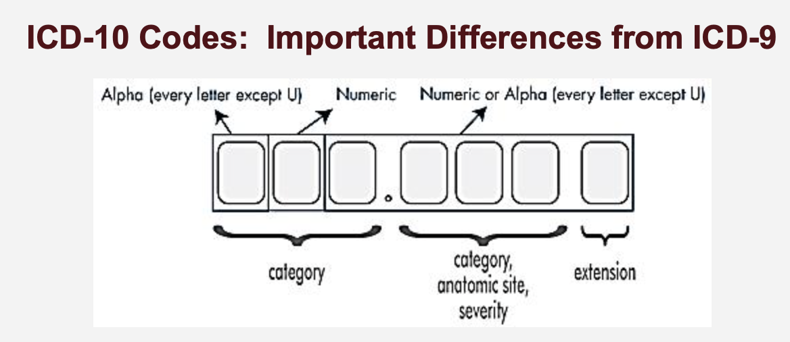

Primary Data Sources: Specifically collected for the purpose of health monitoring (e.g. disease registries and some health surveys).
Secondary Data Sources: Originally designed for other purposes but also used in health monitoring (e.g.administrative databases for Medicare and Medicaid).
An organized set of activities whose purpose is to gather, maintain, and provide health-related information to improve health outcomes.
Components:
Enhanced Insights: Linking different data sources can provide a more comprehensive view of health outcomes.
Examples of Linked Data: Combining EHRs with national health surveys or insurance claim data.
Data Challenges
Definition: A measure that combines the length of life with the quality of life in a single index number.
Calculation: Each year in perfect health is counted as one QALY, while years lived with illness or disability are adjusted according to the severity of the health condition.



Disease Monitoring: ICD codes allow epidemiologists to track disease outbreaks (e.g., COVID-19 had its own ICD-10 codes: U07.1 for confirmed cases).
Healthcare Reimbursement: Ensures accurate billing and insurance claims.
Policy and Research: Facilitates international comparisons of health data.
Let’s look at this patient. The principal diagnosis (ICD9 code is V3000; look it up)
These are secondary diagnoses - look them up - 76502, 77181, 7707, 77212, 77081, 7470, 7455, 77182, 2760, 76522, 7742, 769, 04110, 7793, 6910, 75432, 4019, 0416, 0413, 9999, 2768.
What can we tell about this patient?